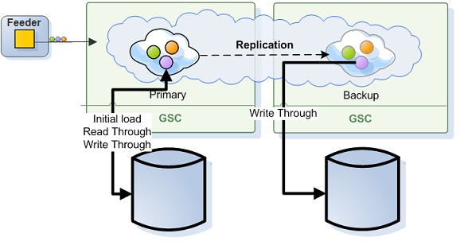

Direct
When running in direct persistency mode (i.e. Read-Write Through) the IMDG interacts with the data source to persist its data where the client application would get the acknowledge for the IMDG operation only after both the IMDG and the ExternalDataSource acknowledged the operation. With this persistency mode, the IMDG operations performance would be heavily depended on the speed of the ExternalDataSource to commit the data and provide acknowledge back to the IMDG for the successful operation of the transaction. When having a mapping layer in between the IMDG and the data source that converts the IMDG objects to relational database tables data i.e. NHibernate, the time which takes to perform the conversion would also impact the acknowledge time and the application overall performance.
The above means you should be careful when using this persistency mode in case your application have the requirement to respond quickly (low latency) and scale in linear manner.
See the Asynchronous Persistency mode that allows you to delegate the IMDG operation to the data storage as a background activity without impacting the application performance.
When the application reading data from the IMDG there are two operational modes you should consider:
ALL_IN_CACHE Cache policy mode. IMDG will not perform any lazy load in case matching object can't be found within the IMDG. This more provides the most deterministic performance.LRU Cache policy mode. IMDG will perform lazy load (i.e. Read Through) in case of matching object can't be found within the IMDG. Lazy load might impact the performance and the scalability of the application.See the Memory Management Facilities for details about the differences between ALL_IN_CACHE and the LRU cache policies.
The Cache policy mode impacts also the initialization of the IMDG instance and the way it is reading data from the data source to bootstrap itself.
ALL_IN_CACHE Cache policy - Each IMDG instance iterating through the database and loading all the relevant data.LRU Cache policy - Each IMDG instance iterating through the database and loading only partial amount of data (based on the Initial-load , memory-usage and Cache Size settings).See the Space Persistency Initial Load for details how you can change the default behavior of the IMDG bootstrapping process once started.
Direct persistency mode supports the following database topologies:
With the central database topology, a single database instance is used to store all the IMDG data. In this case only the primary IMDG instance will update the database. The backup IMDG instance will not update the database. The backup IMDG instance will update the database only once it will turn to be a primary in case of a failure or shutdown of the primary IMDG instance.
A Data-Grid running in Direct persistency mode using central database topology, having all data within the IMDG would have the following configuration:
<ProcessingUnit>
<EmbeddedSpaces>
<add Name="space">
<ExternalDataSource Type="GigaSpaces.Practices.ExternalDataSource.NHibernate.NHibernateExternalDataSource">
<!-- NHibernate-specific config goes here -->
</ExternalDataSource>
<Properties>
<!-- Use ALL IN CACHE - No Read Performed from the database in lazy manner-->
<add Name="space-config.engine.cache_policy" Value="1"/>
<add Name="cluster-config.cache-loader.external-data-source" Value="true"/>
<add Name="cluster-config.cache-loader.central-data-source" Value="true"/>
</Properties>
</add>
</EmbeddedSpaces>
</ProcessingUnit>
With the distributed databases topology, each data grid instance uses its own database instance to store its data. In this case both the primary and the backup data grid instances will update the database once data grid operation is called or replicated (to the backup).
A data grid running in direct persistency mode using distributed databases topology (non-central), having all the data within the data grid would have the following configuration:
<ProcessingUnit>
<EmbeddedSpaces>
<add Name="space">
<ExternalDataSource Type="GigaSpaces.Practices.ExternalDataSource.NHibernate.NHibernateExternalDataSource">
<!-- NHibernate-specific config goes here -->
</ExternalDataSource>
<Properties>
<!-- Use ALL IN CACHE - No Read Performed from the database in lazy manner-->
<add Name="space-config.engine.cache_policy" Value="1"/>
<add Name="cluster-config.cache-loader.external-data-source" Value="true"/>
<add Name="cluster-config.cache-loader.central-data-source" Value="false"/>
</Properties>
</add>
</EmbeddedSpaces>
</ProcessingUnit>
See the Space Persistency section for full details about the properties you may configure.
The following table lists the supported options:
| Cache Policy | Central Data Source | Replication Recovery enabled | Amount of data loaded via the initial load | Data filtering at the initial load enabled |
|---|---|---|---|---|
| LRU | YES | NO | Up to amount of initial load percentage value * | YES |
| ALL_IN_CACHE | YES | YES | All database data | YES |
| LRU | NO | YES | Up to amount of initial load percentage value * | NO |
| ALL_IN_CACHE | NO | YES | All database data | NO |
* Up to amount of initial load percentage value (50%) that is the percentage of cache_size value.
When running with LRU cache policy and ExternalDataSource setup:
EVICT_ONLY modifier.